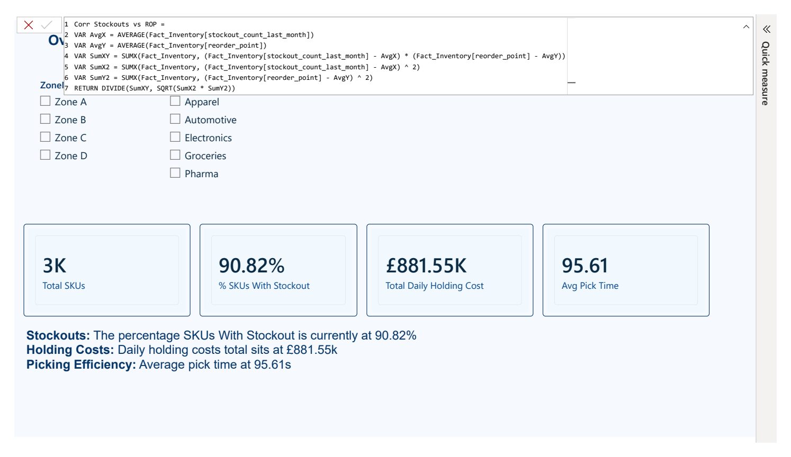

POWER BI · DAX · POWER QUERY · SYNTHETIC DATA
Which inventory issues deserve attention first?
An operations reporting case study examining availability, replenishment policy and picking performance across 3,204 synthetic inventory records.
This is a simulated analysis, not a client engagement. No financial savings or operational improvements were implemented or measured through this project.
Business question
How could an operations manager prioritise stock availability and inventory review without treating model estimates as guaranteed outcomes?
Data and approach
The published fact table has 3,204 rows and 3,204 unique item IDs: one row per SKU in a snapshot. Category, location, zone and date tables support filtering. The date relationship uses last restock date; it is not a transaction history and cannot establish changes over time.
The Power BI report combines overview KPIs, a replenishment-policy comparison, inventory cost calculations and exploratory correlations. The linked repository contains the PBIX, CSV tables and original report export.
Report preview

Original report overview. Monetary figures use synthetic per-unit daily cost inputs; the pound symbol is report formatting, not evidence of real UK costs.
Findings and decisions
| Finding | Interpretation and next decision |
|---|---|
| 90.82% of SKUs record a stockout | Prioritise an availability review. This is the proportion with a recorded event, not the percentage of demand lost or the duration out of stock. |
| 97.03% below the illustrated replenishment threshold | Review the policy assumptions and inventory position before changing purchase quantities. It does not establish the cause of historical stockouts. |
| Popularity–pick-time correlation ≈ +0.008 | No meaningful linear association is visible in this snapshot. Investigate travel distance, congestion and order mix before proposing a layout change. |
Cost calculation and limitations
The displayed daily total reproduces as SUM(stock_level × holding_cost_per_unit_day) = 881,546.11. This confirms arithmetic against the supplied CSV, not economic realism. Monetary savings are therefore not presented as a portfolio achievement.
The historical export labels a filter “Safe To Cut” and annualises its estimate. Those labels overstate what a snapshot can establish. Treat the filter as a review candidate list subject to stockout risk, demand variation, lead times and policy validation.
Policy assumptions
The illustrated threshold covers demand over lead time plus review interval, with a 1.645 standard-deviation allowance. In a periodic-review setting this is better described as an illustrative order-up-to target than a universal reorder trigger. It assumes stable lead times and independent daily demand variation. A proposed order quantity would also need inventory on order, backorders and relevant constraints.
Further validation
- Test the policy against transaction-level demand and replenishment history.
- Compare service level and inventory under alternative assumptions.
- Use location distances and pick routes to test the slotting hypothesis.
- Validate cost units and realistic rates before any financial recommendation.
Inspect the evidence
Repository, source data and Power BI file · Original five-page report
The original report is retained for transparency; read it alongside the limitations above.
View CV